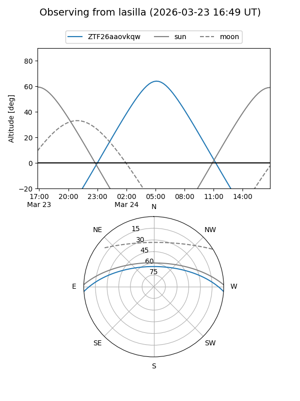
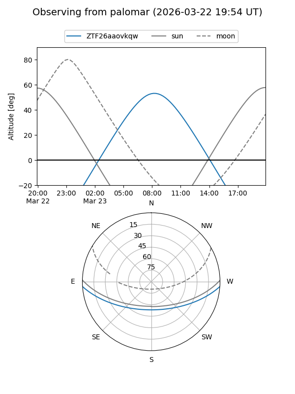

ZTF26aaovkqw
Target ZTF26aaovkqw at 2026-03-23 09:25
Aliases and brokers:
FINK: link
Lasair: link
ALeRCE: link
alt names
ZTF26aaovkqw (ztf,fink_ztf)
Coordinates:
equatorial (ra, dec) = 187.2592,-3.23553
equatorial (HMS+DMS) = 12:29:02.20,-03:14:07.92
galactic (l, b) = (291.9760,+59.15887)
Flags:
Photometry:
last ztfg=17.85
1 ztfg detections
Lightcurve
Visibility


Additional plots